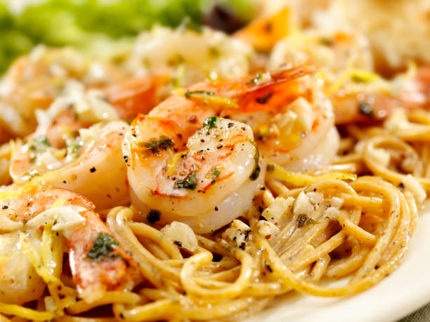

Shrimp Scampi and Pasta

Description
Shrimp scampi with linguine is the ultimate seafood pasta dish. Works with any pasta; angel hair is less filling.
This quick and easy shrimp scampi pasta recipe is an Allrecipes fan-favorite, with more than one thousand ratings and hundreds of reviews. And it's ready to serve in only 40 minutes. Read on to get tips to make the best shrimp scampi — it's a top-rated recipe that's simple enough for weeknight dinners and fancy enough for a dinner party.
From Allrecipes
Ingredients
- 1 (16 ounce) package linguine pasta
- 2 tablespoons butter
- 2 tablespoons extra-virgin olive oil
- 2 shallots, finely diced
- 2 cloves garlic, minced
- 1 pinch red pepper flakes (optional)
- 1 pound shrimp, peeled and deveined
- 1 pinch kosher salt and freshly ground pepper
- ½ cup dry wine
- 1 lemon, juiced
- 2 tablespoons butter
- 2 tablespoons extra-virgin olive oil
- ¼ cup finely chopped fresh parsley leaves
- 1 teaspoon extra-virgin olive oil, or to taste
Home